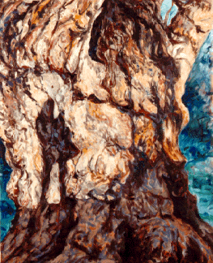

<TITLE>Shadows of Generations</TITLE>
<center><h1>Shadows of Generations</h1></center>
<p>
<br>
<p>
<p>
<p>
<p>
<p>
<p>
<p>
<p>
<p>
<p>
<p>


<h3>This is the largest Plains Cottonwood Tree in the USA.  It is in the small town of Hygiene, Colorado about 10 miles from Boulder.  This painting is special for me because the sun was setting behind the figure of my daughter holding her baby and their shadows were cast on the ancient tree while I was drawing it.  I wonder how many other generations of mothers and babies were outlined on this same tree, by standing on the same spot at sunset?</h3>
<pre>
</pre>

<h3>&copy;  June Julian 1997<br>
Shadows of Generations<br>
Oil on Canvas 36"X44"
</h3><p>
<p>
Plains Cottonwood<br>
<i>Populus deltoides var occidentalis</i><br>
age: approx. 400 years<br>
circumference 54 inches from base: 432 inches</h4>

<p>
<p>
<p>
<p>
<p>
<p>
<hr>
<pre>
Date: Sun, 05 May 1996 12:26:25 -0700
From: Scott Sexton & David Lewis <davescot@miracosta.cc.ca.us>
To: jj68@NYU.EDU
Subject: Trees -- what else

I am also a tree admirer -- or perhaps I should even say venerator.

My partner and I just bought a cabin in the Sierra Nevada mountain range. It is
at 6700' and located in a Giant Sequoia grove. In fact we are now the guardians 
of an approximately 2000 year old giant that is on our land. I say guardians 
because how can anyone really "own" such an organism.  It is its own being, 
and very beautiful. I feel privileged to sit in its shade. Each Giant Sequoia 
tree is so unique. I suspect it is because they live so long and have so much 
interaction with their environment. I think I shall have a web page soon if 
you would like to see some pictures of this giant.

I very much enjoy viewing your painting "Shadows of Generations". It is a
 beautiful painting of the soul of a very old individual.

A book that I know of to add to your bibliography of books on big, tall, and
noteworthy trees is:

        TO FIND THE BIGGEST TREE  by Wendell D. Flint

        copyright 1987
        Sequoia Natural History Association, Inc.
        Three Rivers,  California 93271

Scott Sexton
</pre>
<hr>

<p>
<p>
<p>
<p>
<p><p><p><p><p><p>
<p>
<p>
<br>
<br><br><br><br><br>
<A HREF="index-2.html"></A>   Return to Main Page
<br><br><p><p><center><A HREF="comment.html">Comments</A></center><p><p><p>
<center>Please send e-mail to:  June Julian<A HREF="mailto:jj68@nyu.edu">  jj68@nyu.edu</center></A>
